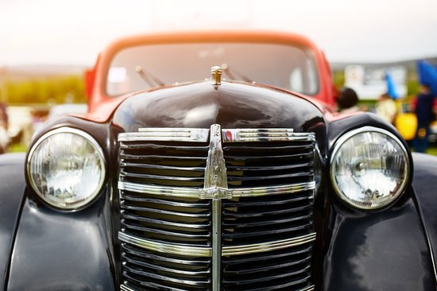

Zgodovina BMW
Rojstvo BMW – Ustanovitev leta 1916

Rojstvo
Začetek zgodbe – kjer se življenje začne in pot se začne pisati.

Družina
Temeljna vrednota, ki daje podporo, ljubezen in smer v življenju.

Otroštvo
Leta radovednosti, učenja in brezskrbne igre – oblikovanje osebnosti.

Prvi Koraki
Koraki, ki vodijo proti samostojnosti in raziskovanju sveta.

Vplivi
Dogodki in ljudje, ki so zaznamovali začetek življenjske poti.

Zgodnje Sanje
Prve ideje, vizije in upanja, ki tlakujejo prihodnost.

Navdih
Vir notranje motivacije in začetna iskra za velike korake.
Začetki in Vizija
Rojstvo BMW